Vanderbilt · Learning Series · ATD facilitator guide · print edition
Making It Normal, the facilitator guide

Run of show
| Screen | Full (min) | Core (min) |
|---|---|---|
| Welcome / QR | 3 | 2 |
| Objectives | 2 | 1 |
| The Chancellor's charge | 3 | <1 |
| Agenda | 1 | skip |
| 01 · The modeling effect | 9 | 6 |
| Manifesto | 1 | skip |
| 02 · Show: model out loud | 11 | 8 |
| 03 · Say: permission and limits | 12 | 9 |
| 04 · Set: norms in the rituals | 12 | 7 |
| 05 · The Adoption Lab | 14 | 10 |
| 06 · Sustain past the cliff | 10 | 6 |
| Recap quiz | 4 | 4 |
| Capstone · My adoption plan | 6 | 6 |
| Glossary | 1 | skip |
| Closing · commitment | 4 | 1 |
| Total | 93 | 60 |
Audience
Managers and team leads: anyone with a team whose AI adoption they are expected to lead. Part of the Manager Voyage program. 8 to 24 works best (the narration and permission drills run in pairs); scales larger with room votes. Start Smarter is assumed (learners can say 'prompt' without flinching), and the traffic-light data rule from the AI courses is assumed and restated here. Its natural companion course is the workflow-redesign session; this one carries the leadership behavior side.
Room setup
Projector plus presenter device; learners on their own devices via the Welcome-slide QR; movable seating for pairs. Virtual: breakouts of 2 for the narration and permission-line swaps. Set the norm in the first minute: roles and rituals, never people's names, and nothing typed is saved or sent. Expect real tension in the room: some attendees use AI daily in secret, some believe it is quietly forbidden, and both groups report to somebody in the building.
Materials
- Projector or large display and the facilitator link open (this edition)
- Facilitator laptop with arrow keys or clicker; all notifications off
- Learner devices (BYOD) joining via the welcome-slide QR
- A few printed cheat sheets (cheatsheet.html) for anyone without a device
- Printed adoption plans (worksheet.html) as the no-device and projector-failure fallback
- Whiteboard or flip chart with markers for the permission-line rewrites
- One real AI use of your own from the past two weeks, ready to narrate live: the task, the prompt, the fix, and the miss
A week before
- Read this guide end to end, then run BOTH editions start to finish, doing every exercise, including drafting a real permission talk for a team you actually lead. You will be asked what your own first move is; a real answer plays far better than a hypothetical.
- Choose the AI use you will narrate live in section 02: something real from your own work, slightly imperfect, with a fix you can show. Rehearse it once out loud; it should take about ninety seconds.
- Build your own adoption plan in the capstone. You'll show the structure, never the contents.
- Send the pre-work invite (template on this page) with the calendar invite: know your team's AI temperature and bring one AI use of your own, held privately.
- Decide your path now: Full (90-minute slot) or Core (60). Mark which pair drills you keep versus run solo.
- Skim the current Gallup workplace AI research so the numbers in Guess the Number are fresh; the game's reveals carry the citations, but you should be able to say 'the research' with a straight face.
The day before
- Test the projector with the facilitator link; confirm the notes rail is readable from where you'll stand.
- Scan the welcome QR from the back of the room with your own phone; it must land on the learner edition.
- Run one full round of the Adoption Lab and one trainer so you can drive them without looking.
- Print 5 to 10 cheat sheets and adoption plans.
- Re-read the tough-questions bank; say the 'I use AI secretly myself' response out loud once. That confession is coming, possibly from you.
30 minutes before
- Welcome slide up as people arrive; it does the enrolling for you.
- Close every other tab and app; silence the machine.
- Test arrow-key navigation and one interaction (run a Guess the Number round, open the lab).
- Write 'ROLES AND RITUALS, NEVER NAMES' where the room can see it all session.
- Write the four words SHOW, SAY, SET, SUSTAIN in a column on the whiteboard; you'll check them off as the session lands each one.
When things go sideways
If Projector or the site fails mid-session: Teach from the whiteboard: the four words are already written there, and the 1:1 question, the permission talk outline, and the traffic light all draw in seconds. The narration drill and the permission-line swap never needed a screen; the capstone moves to the printed plan. The lab becomes a group walk-through: read each slot's three options aloud and have the room vote.
If Learner devices can't join (wifi or filters): Run facilitator-only: the trainers play well on the projector with the room voting A/B/C by hands; the permission talk builder and capstone move to paper. You lose typing, not learning.
If You're 10+ minutes behind by the Adoption Lab (05): Declare the Core path silently: pair drills become solo passes, debriefs shrink to one voice, and the closing tightens to the fist-to-five plus commitment round. Never cut the lab, the builder, or the capstone; they carry the session's practice objectives.
If Someone names a colleague or starts prosecuting a specific person's secret AI use: Protect the norm warmly: 'Hold that. Roles and rituals, never names. Secret use is a symptom of the permission gap, so the fix is the talk, never the prosecution.' If it keeps happening, a real trust problem is in the room; name the no-blame principle and move the person to a private follow-up.
If The room is skeptical: 'AI is overhyped, my team doesn't need this': Don't argue futures; play Guess the Number and let the adoption data speak. The frame that lands: whatever you think of the hype, about 40 percent of employees already use AI and most have never heard a rule from anyone. Silence is the riskiest policy on the menu, so the permission talk is worth giving even by a skeptic. Then point at the lab's skeptic slot: the course treats doubt as a resource, and so should the room.
If The room is the opposite: enthusiasts who want to mandate AI use tomorrow: Aim the enthusiasm at behavior: 'Great, you go first: what will you narrate at your next team meeting?' Then hold the line on mandates; the lab's skeptic slot and the Fix the Ritual trainer do the sobering for you. Mandates produce compliance theater, and the enthusiast-only failure mode in the trainer is written for exactly them.
If A manager says their own leadership has given them no rules to pass on: Honor it; this is the permission gap one level up, and it is common. The move: within the traffic light, which is already VU-wide, a manager can still name what they encourage on their own team, model their own use, and route gray-zone cases upward. Explicitly encourage them to ask their leader the same question this course asks them: what do you want us to do with AI? That question travels well.
If Someone raises a real data-privacy concern mid-flight: Stop and honor it; this is the one interruption that outranks the agenda. Restate the traffic light (green public, yellow internal in approved VU tools only, red private information about people, never), confirm their case against it, and if it's genuinely ambiguous, park it with a promise to route it to the right owner rather than improvising policy from the front of the room.
Tough questions, ready answers
Q: Honestly, I use AI all the time and have never told my team. Is this session telling me I've been doing it wrong?
It's telling you you've been doing it silently, which is different from wrong, and it is the single most common pattern in the data. The cost of the silence is real: your team gets no example to copy, no signal about what's allowed, and no evidence that imperfect use is safe. The good news is that your fix is the cheapest one in the room: you already have months of material to narrate. Pick one use, show the prompt and the fix at your next team meeting, and you've converted a private habit into leadership.
Q: Isn't modeling my misses going to make me look incompetent in front of my team?
It reads the opposite way in practice. A manager who says 'the draft got this wrong and here's how I caught it' is demonstrating mastery of the whole loop: use, standard, verification. What actually damages credibility is the other path: modeling flawless speed, having the team copy it without the checks, and then owning the error that ships. The miss you narrate is cheap insurance against the miss nobody admits to. And the deeper effect is cultural: your admitted miss is what makes everyone else's miss safe to log.
Q: What if I give explicit permission and someone ships an AI error to a client or a student?
The permission talk is what makes that LESS likely, because every encouraged use comes with its check attached, and the miss log means errors surface early instead of hiding. Compare the alternative: with no stated rules, people use AI anyway, unchecked and unadmitted, and the first error you hear about is the one that already reached someone. If an error does ship, run the no-blame play: fix it, log it, name what check would have caught it, and resist the urge to revoke permission; one public revocation restarts the secret-use era for everyone.
Q: My team is already stretched. Where does an hour of learning time per person come from?
From the same place the AI wins come from: the tasks that get faster. The honest framing is a trade: the hour is the investment that makes the drafting, summarizing, and formatting wins real, and Gallup's data says integrated, supported use is where the frequent-use gains live. Start smaller if you must: thirty minutes, or one shared hour as a team. What you cannot do is call learning a priority and let the calendar say otherwise, because the team believes the calendar.
Q: Shouldn't this come from the top? I'm one manager; I can't set AI strategy.
Strategy comes from the top; adoption happens on teams, and the research is specific about that: employees' comfort follows a communicated plan, and their usage follows their manager's visible behavior. You don't need to write policy; the traffic light already exists. What only you can do is model use, name what you encourage inside those boundaries, and install the rituals in your own meetings. And a manager who arrives at leadership's door with ninety days of adoption stories and a miss log is influencing strategy, from below, with evidence.
Q: What do I do if my skeptic refuses even the pairing task?
First, check what the refusal is made of: most skeptic positions are one part principle and three parts nobody-asked-my-opinion. The pairing move works because it does ask: their standards become the verification. If it's still a no, don't force it; assign them the verifier role on someone else's AI-drafted work instead, which honors the doubt while keeping them inside the norm. A skeptic you mandate becomes a martyr; a skeptic you make the quality bar becomes your best control. And accept that one holdout in six, doing good work, is not a crisis.
Q: How is the miss log different from a record my team could be punished with later?
By design choices you make out loud: no names on the misses, full credit on the catches, and the log reviewed only as a team learning artifact, never in performance conversations. Say that explicitly when you launch it, and then keep the promise, because the log lives exactly as long as your restraint does. If your organization's climate genuinely can't support a written log, run the verbal version: a standing 'what did AI get wrong this week' moment in the team meeting. The ritual matters more than the artifact.
Copy-paste templates
Pre-work invite (paste into the calendar invite)
Subject: Before our Making It Normal session. Two things to bring, both held privately: 1) A rough read of your team's AI temperature: who's keen, who's waiting to see, who's skeptical. 2) One way you yourself have used AI for work in the last two weeks, including anything it got wrong. You will never be asked to name people; every exercise runs on roles and rituals, and everything you type stays on your screen. That's it, no reading, no tools to install.
7-day pulse (send one week after)
Subject: One week later, did the first move happen? Three quick lines, reply whenever: 1) Did you make your plan's first move: the narration, the permission talk, the 1:1 question, or the miss log? 2) What did the team say or do in the moment? 3) Which ritual is on the calendar now, and at what cadence? Replies come to me only. Not yet? The plan still works; this note is your nudge.
30-day re-poll (send a month after)
Subject: Thirty days of leading adoption. Two questions, same scale as the room: 1) Fist to five, how confident are you now that you can make AI use normal on your team? 2) One line of evidence: who tried something new, what did the team catch before it shipped, and where did the recovered hours go? Reply with a number and a line. The before-and-after pair is how we know this session did more than feel good.
After the session
Seven days out, send the pulse: 'Did the first move happen? What did the team say or do in the moment? Which ritual is on the calendar now?' At 30 days, send the re-poll: the same fist-to-five confidence question from the close, plus 'who on your team tried something new, what did the team catch before it shipped, and where did the recovered hours go?' The count of first moves actually made within 7 days is the program's headline Level 3 metric.
Welcome / QR Full 3 min · Core 2
Get every learner into the experience on their own device and set the norm that makes real-team material safe: roles and rituals, never names, and nothing typed leaves the screen.
Say
“Welcome. Point your camera at that code before we start. Today is about the one thing the research says actually moves a team from AI-curious to AI-fluent, and it isn't a tool, a license, or a mandate. It's you, visibly. We'll work on your real team today, so one ground rule for the next ninety minutes: roles and rituals, never people's names. And everything you type today stays on your screen; nothing is saved or sent anywhere.”
Do
- Have this slide projected as people arrive.
- Point at the QR and get phones up before you say anything else.
- Set the norm explicitly and early: roles and rituals, never people's names; typed exercises stay on their screens.
- Confirm by show of hands that most of the room has the site open before advancing.
Ask
“Quick calibration, shout it out: how many of you have used AI for actual work in the last two weeks? Keep them up if your TEAM has ever heard you say, out loud, what AI use you encourage.”
Expect:
- Nearly every hand up on the first question
- Most hands down on the second
- Some uncomfortable laughter at the drop
Respond: Name the gap warmly: 'That drop is the permission gap, and it's the same gap in the global data. Closing it costs one conversation and a little visible behavior, which is the whole of today.'
Validate: 80%+ of the room has the deck open on a device; the room can repeat the 'roles and rituals, never names' norm back to you.
Watch for: Managers bracing for either an AI sales pitch or a compliance lecture. The frame that relaxes both: today is a leadership session that happens to be about AI, and the skill is one they already respect: modeling.
Transition: “Here's exactly what you'll walk out able to do.”
Core path: Core: one scan prompt, the norm stated once, move on.
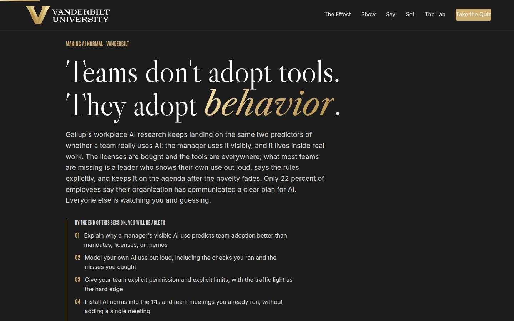
Objectives Full 2 min · Core 1
Set the contract: five capabilities, ending in one real adoption plan with a dated first move.
Say
“Five things by the end. You'll know why your visible behavior predicts your team's adoption better than any mandate. You'll be able to model your own AI use out loud, including the misses and the checks. You'll have a permission talk drafted: what you encourage, what's never OK, who to ask. You'll know how to install AI norms into the 1:1s and team meetings you already run. And you'll know how to keep it alive in month three, when the novelty is gone. It all lands in one artifact: an adoption plan for your real team, with a date on it.”
Do
- Read the five objectives briskly, in plain language.
- Land on the last one: this session ends with a REAL plan, one team, one first move, one date.
- Name the source once for credibility: Gallup's workplace AI research for the numbers, and Show, Say, Set, Sustain as the method.
Validate: Learners can say what the capstone will be (one team, one first move, one date).
Watch for: Tool questions arriving early ('which AI should my team use?'). Park them: the session is deliberately tool-agnostic, and the behaviors outlive any tool choice.
Transition: “Before the plan, one minute on why the university wants exactly this from you.”
Core path: Core: objectives 1 and 5 out loud; the rest on screen.
The Chancellor's charge Full 3 min · Core <1
Anchor the session in the institution's own plan: the one-sentence vision, the three focus areas in adoption terms, and where a manager who makes AI normal feeds the reputation flywheel.
Say
“Chancellor Diermeier's vision for this university is one sentence with no hedge in it: Vanderbilt will define the great university of the 21st Century and be it. The motto has always been the dare, Crescere aude, dare to grow, and a team only grows into new tools when its manager makes them normal first. Uncommon speed and agility are not slogans on this page; they describe teams where AI lives inside the weekly routine, because someone modeled it out loud. The bottom card is the reputation flywheel: reputation attracts talent, funding, partnerships, and access. The university can buy the licenses; whether the tools become normal on your team is the part it cannot do without you.”
Do
- Read the vision sentence exactly as written, then pause; it lands better without commentary.
- Walk the three focus cards in one breath each, landing each team translation line.
- Close on the flywheel card: execution with ambition needs adoption, and adoption starts with the manager. That manager is the person you will teach them to be today.
Validate: Learners can say why their team's adoption is part of the institutional plan, in their own words.
Watch for: Strategy fatigue: part of the room has heard the vision language elsewhere. Keep it in adoption terms; the translation lines exist so nobody has to squint to find themselves in it.
Transition: “Six ideas, in a deliberate order.”
Core path: Core: under a minute: read the vision sentence, gesture at the three focuses, move on.
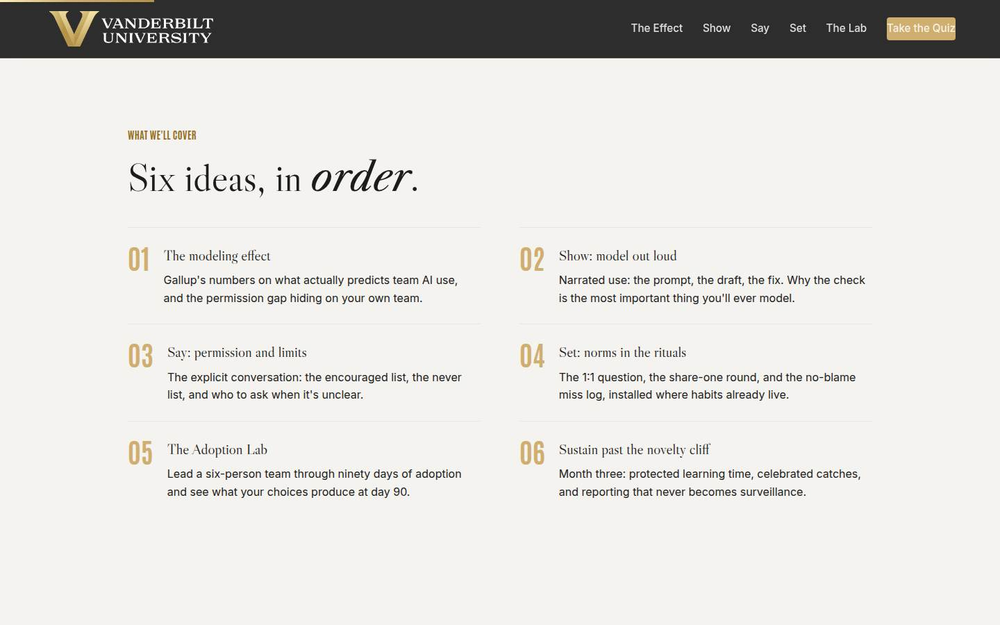
Agenda Full 1 min · Core skip
Show the arc once so learners can place each tool as it arrives: evidence, then the four moves of the method, with the lab as the rehearsal.
Say
“The arc is simple: first the evidence about what actually predicts adoption. Then the method, four moves: show your own use, say the rules out loud, set the norms into your rituals, and sustain it past month three. In the middle you'll lead a simulated team for ninety days and find out what your choices produce.”
Do
- Walk the six items in one breath each.
- Point out the shape: the evidence (01), then the method's four moves: Show (02), Say (03), Set (04), practiced together in the lab (05), and Sustain (06).
Validate: None needed; this is orientation.
Watch for: Don't teach here; every concept has its own slide.
Transition: “Start with the evidence, because most of what organizations tried first didn't work, and the numbers say why.”
Core path: Core: skip entirely; the deck's structure carries it.
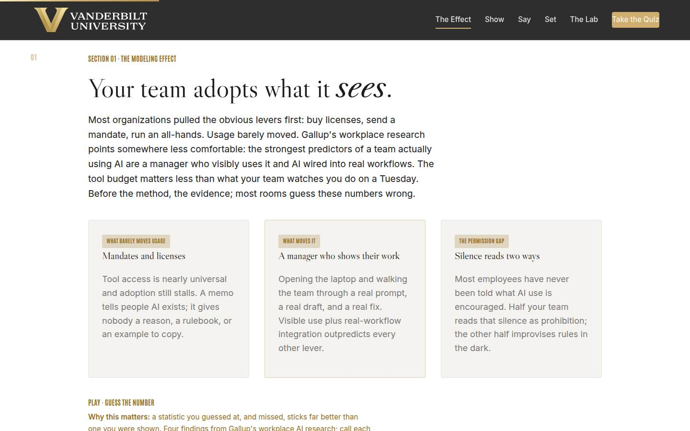
01 · The modeling effect Full 9 min · Core 6
Establish with guessed-at, missed numbers that AI use is widespread, leadership silence is the norm, and the manager's visible behavior plus workflow integration are the strongest predictors of team adoption.
Say
“Before the method, the evidence, and I want you to guess. Gallup has been tracking AI in the U.S. workplace for years. About 40 percent of employees now use AI at work, double what it was two years ago, and 19 percent use it weekly or more. Now the leadership side: only 22 percent of employees say their organization has communicated a clear plan for AI. And where leadership HAS communicated one, people are nearly five times as likely to feel comfortable using AI at work. Hold those together: usage is spreading, mostly in silence, and comfort follows what leaders visibly do and say. Four findings, call your number before each reveal.”
Do
- Frame the game: four findings from Gallup's workplace AI research, guess each number before it's revealed. Missed guesses are the point; they stick.
- Run Guess the Number on devices, or as a room vote on the projector; call for guesses out loud before each reveal.
- After the reveal round, land the frame: the licenses are bought; the missing ingredient is visible leadership behavior, which is free and which only they can supply.
- Run the quick check (what predicts frequent team use), then the pair activity: has your team heard your encouraged list, and could they describe one way you use AI?
- Count both hands out loud and connect the counts to the 22 percent finding: the permission gap is in the room.
Ask
“Two hands. First: has your team ever heard you say, in plain words, what AI use you encourage? Second: could anyone on your team describe one way YOU use AI?”
Expect:
- Most hands down on both
- A few yeses on the second from managers who demo tools
- Someone protests that their team 'just knows' it's fine
Respond: For the 'they just know' answer, warmly: 'Half of them know. The other half is waiting for permission you think you've given. Silence always splits a team exactly that way, which is the whole case for saying it out loud.'
Debrief: Adoption doesn't follow the tools; it follows you. Which means the scarcest resource in this game is one this room already controls: your own visible behavior.
Validate: Quick check correct; the two-question count lands visibly and each manager knows which side of the permission gap their own team is on.
Watch for: A methodology skeptic litigating survey design. Don't defend a single number; the case is the convergence: widespread use, rare guidance, and comfort tracking leadership communication. Park deep methodology questions.
Transition: “One sentence before the method. It's the whole course in fourteen words.”
Core path: Core: Guess the Number as a fast room vote, quick check stays, the pair inventory becomes one show of hands with no discussion.
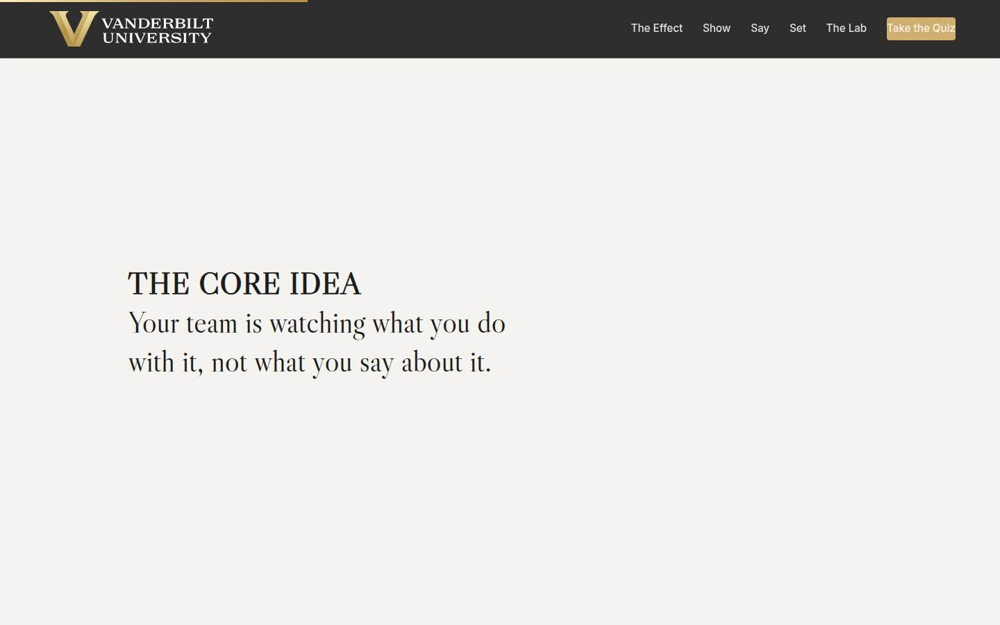
Manifesto Full 1 min · Core skip
One beat of stillness to lock the session's core idea before the method arrives.
Say
“Your team is watching what you do with it, not what you say about it.”
Do
- Let the line animate word by word. Say nothing until it finishes.
- Read it once, slowly, then advance.
Validate: None; this is pacing.
Watch for: The urge to talk over it. Don't.
Transition: “So the first move of the method is about what they see. Show.”
Core path: Core: skip; say the line yourself as you pass it.
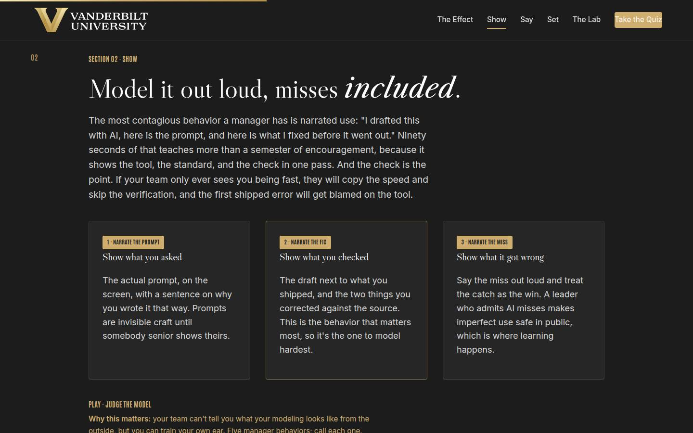
02 · Show: model out loud Full 11 min · Core 8
Teach narrated use (prompt, draft, fix) as the highest-leverage modeling behavior, with the check as the most important thing to model and the admitted miss as what makes imperfect use safe.
Say
“Here's the most contagious thing a manager can do with AI: use it out loud. Not 'I support AI.' This: 'I drafted the update with AI. Here's the prompt I used. Here's what it got right, here are the two numbers it got wrong, and here's how I caught them against the tracker.' Ninety seconds, and your team just learned the tool, the standard, and the check, from someone they already trust. Now the warning. If all your team ever sees is how FAST you are, they'll copy the speed and skip the check, and the first error that ships will be blamed on the tool. So the most important thing you'll ever model is the verification. And the bravest, best thing you can model is the miss: 'it invented a citation, I caught it, catching it is the win.' Watch me do the whole thing right now with something real from my own week.”
Do
- Walk the three cards in order: narrate the prompt, narrate the fix, narrate the miss.
- Stress the check: if the team only sees speed, they copy speed and skip verification. The fix you show IS the standard you set.
- Then do the bravest thing on the agenda: narrate your own real AI use, live, ninety seconds, miss included. You prepared this; it lands harder than any slide.
- Send them to Judge the Model: five manager behaviors, call each one.
- Run the pair narration from Go deeper: one real AI use each, with the listener checking whether the check appeared in the story.
Ask
“From the pair drill: when your partner narrated their AI use, was the check in the story? And if it wasn't, what does that tell you about what your team would copy from you?”
Expect:
- Many honest noes: the story went straight from draft to done
- Some yeses with a specific source named
- Someone realizes their real workflow has no check to narrate
Respond: For the no-check realization: 'That's the most valuable discovery in the room. Add the check to the workflow first, then narrate it; never narrate the version you wish you did. Teams copy the real one.'
Debrief: Narrated use: prompt, fix, miss, check. It costs ninety seconds, and it's the single strongest signal you can send. The next move makes the rules just as visible.
Validate: 4+ of 5 on the trainer for most of the room; every learner has narrated one real use to a partner and can say whether their own story included the check.
Watch for: Managers who claim no AI use of their own to narrate. Two moves: pair them as designated listeners with a job (catch the missing check), and privately point them at the capstone's 1:1-question option, which requires no personal fluency to start.
Transition: “Because showing is half the signal. The other half is saying the rules out loud, and silence is costing you more than you think.”
Core path: Core: cards fast, YOUR live narration stays (it's the section's proof), trainer on devices; the pair narration drops to one volunteer narrating to the room.
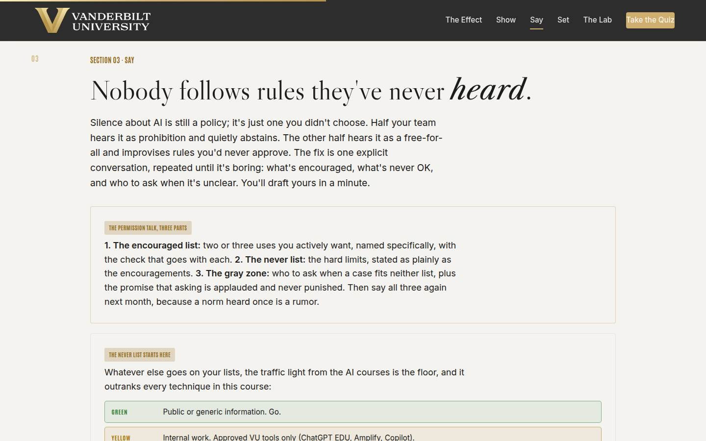
03 · Say: permission and limits Full 12 min · Core 9
Install the permission talk (encouraged list, never list, gray-zone routing) as an explicit, repeated conversation, with the traffic light as the non-negotiable floor of the never list, and get every learner a drafted outline for their own team.
Say
“Here's an uncomfortable fact: your team already has an AI policy. It's whatever they've inferred from your silence, and it splits them straight down the middle. Half decided it's forbidden and quietly abstain; half decided it's a free-for-all and are improvising rules you'd never approve. The fix is one conversation with three parts. The encouraged list: two or three uses you actively want, named specifically, each with its check. The never list: the hard limits, said just as plainly, and it starts with the traffic light: green, public or generic, go; yellow, internal work, approved VU tools only; red, private information about people, never, in any tool, whatever the deadline. And the gray zone: the unclear case you know is coming, answered in advance, plus who to ask next time, with a promise out loud that asking is applauded. Then you say the whole thing again in a month, because a norm heard once is a rumor. Draft yours now; three sentences.”
Do
- Land the silence problem first: no stated rules splits every team into half prohibition-readers, half improvisers, and both halves are guessing.
- Walk the three-part card: encouraged list with checks attached, never list, gray zone with a named person to ask.
- Walk the traffic light and be unambiguous: green public, yellow internal in approved VU tools only, red private information about people, never. The light is the floor of every never list and it outranks everything else today.
- Then the section's real work: the private builder. Three fields: the encouraged use, the limit, the gray-zone case. Repeat the privacy line before they type.
- Give the builder quiet time; field 3 (the unclear case their team will actually hit) deserves a full minute.
- Run the pair swap from Go deeper: read your encouraged line and never line aloud; partner names what the team would still be unsure about.
Ask
“From the swap: what did your partner say your team would still be unsure about after your talk? And was your never line as plain as your encouraged line?”
Expect:
- Fuzzy phrases surfaced: 'sensitive information', 'use judgment', 'internal stuff'
- Never lines noticeably hedgier than encouraged lines
- A genuinely hard gray-zone case the pair couldn't settle
Respond: For the unsettled gray-zone case: 'Perfect; that's what the routing line is for. You don't need to know the answer today; you need your team to know who gets asked, and that asking is safe. Take the case to the owner this week and report the answer back; that loop, done once in public, teaches more than the policy.'
Debrief: The permission talk: encouraged, never, gray zone, repeated. Five minutes of your next team meeting, and both halves of your team stop guessing. Now the norms need somewhere to live.
Validate: Every learner has a drafted talk outline with all three parts; the room can state the traffic light unprompted; read-aloud lines survive the 'what would they still be unsure about?' test.
Watch for: Never lists made entirely of vague caution ('be careful with sensitive stuff'). Push for the plain version: name the data, name the tool rule. Also quiet red-light violations in the encouraged field ('AI could draft the performance reviews!'); correct immediately and kindly. The traffic light correction matters more than the flow of the room.
Transition: “Because a talk is an event. The next move turns it into a habit, using meetings you already have.”
Core path: Core: silence problem in one line, traffic light at full strength, builder stays at full length with its quiet minute protected; the pair swap becomes a solo read-aloud under the breath.
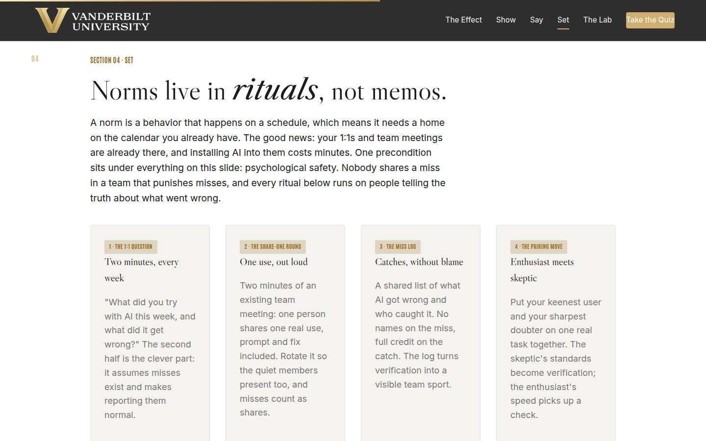
04 · Set: norms in the rituals Full 12 min · Core 7
Install the four ritual moves (the 1:1 question, the share-one round, the miss log, the enthusiast-skeptic pairing) inside existing meetings, with psychological safety named as the precondition that makes all of them work.
Say
“A norm is a behavior that happens on a schedule, which means it needs a home on a calendar, and the good news is your calendar already has the homes. Four moves, all small. The 1:1 question, two minutes, every week: what did you try with AI this week, and what did it get wrong? The second half is doing the real work; it assumes misses exist, so reporting them becomes normal. The share-one round: two minutes of the team meeting, one person shows one real use, rotated through everyone, misses count. The miss log: what AI got wrong and who caught it, no names on the miss, full credit on the catch. And the pairing move: your keenest user and your sharpest skeptic on one real task; her standards become the team's checks. Under all four, one precondition: safety. Nobody shares a miss in a team that punishes misses. Which is why you go first, on everything: log the first miss yourself and let them watch nothing bad happen to you.”
Do
- Land the principle first: norms are behaviors on a schedule, so they live in rituals the calendar already has. Zero new meetings.
- Walk the four cards: the 1:1 question, the share-one round, the miss log, the pairing move.
- Name the precondition plainly: psychological safety. Nobody logs a miss in a team that punishes misses, and the manager going first is what proves it's safe.
- Send them to Fix the Ritual: five setups, diagnose each one.
- Run the quick check on the blame-free log, then the drill: pick ONE first ritual, script its opening line with the safety promise, and pressure-test it against a partner playing the skeptic.
Ask
“Which ritual are you installing first, and what's the opening line your team will actually hear, safety promise included?”
Expect:
- Most pick the 1:1 question (private, cheap, low ceremony)
- Opening lines that forget the safety promise on the first pass
- A skeptic-player partner poking at whether the no-blame rule will hold
Respond: For missing safety promises: 'Add the sentence out loud: misses go in the log, nobody gets graded on them, and I'll log the first one. Your team has heard initiatives before; the promise plus you going first is what makes this one different.'
Debrief: Four small rituals, zero new meetings, one precondition. Installed one at a time, they're how the permission talk becomes just how this team works. Time to feel all of it at once.
Validate: 4+ of 5 on the trainer; every learner has one chosen first ritual and a scripted opening line that includes the safety promise; the room can explain why a punished miss empties the log.
Watch for: Ritual maximalists planning to launch all four on Monday. Hold the line: one at a time, four weeks apart, or the team hears an initiative and waits it out. Also the manager who wants the miss log without the no-blame rule; that's a surveillance tool wearing a learning costume, and the quick check exists to catch it.
Transition: “You've now got all four moves of the method. The lab is where you find out whether you'd actually make them.”
Core path: Core: cards fast, safety precondition at full strength, trainer on devices; the script-aloud becomes a solo written line with one volunteer reading theirs.
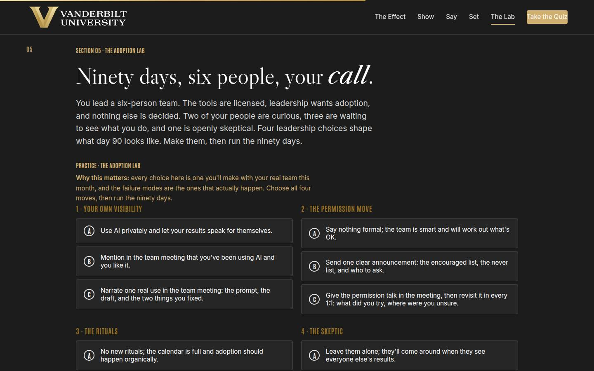
05 · The Adoption Lab Full 14 min · Core 10
Give every learner a full felt rep of the method: four leadership choices (visibility, permission, rituals, the skeptic) and a day-90 outcome that rewards leadership behavior rather than AI enthusiasm. The session's deepest practice block.
Say
“Here's your team: six people. The tools are licensed, leadership wants adoption, and nothing else is decided. Two of your people are curious, three are watching you to find out what's safe, and one thinks this is all hype. Four choices: how visible your own use is, what you do about permission, what rituals you install, and what you do with the skeptic. Choose honestly, the way you'd actually behave in a busy quarter, and then run the ninety days. One warning from the research: when team adoption stalls, it is almost never because the tools weren't good enough. It's because nobody could see the leader use them, nobody heard the rules, and nobody found a safe place to try. Watch where the lab punishes you; it's never for how much AI anyone used.”
Do
- Set the scenario in one breath: six people, tools licensed, two curious, three waiting, one skeptic, and nothing decided except by you.
- Send them into the lab on devices: choose all four moves, then run the ninety days.
- Let people get their day-90 outcome individually; the mid and weak tiers teach more than the strong one, so don't coach choices in advance.
- Ask for a show of hands by tier: whole-team practice, two speeds, or the stall. Have one stalled-tier learner read their coach notes aloud; the room learns from the postmortem.
- Push the rerun: strengthen your weakest move and run the ninety days again. The delta between runs is the lesson.
- Then the pair drill: name which of the four choices your REAL team is living right now, and this week's version of the stronger option.
Ask
“For those who hit two speeds or the stall: which single choice cost you the ninety days, and is it the one your real team is living right now?”
Expect:
- The visibility choice: 'I picked the quiet version because that's honestly me'
- The permission choice: the one announcement that faded
- An honest 'my real team is the weak version of all four'
Respond: Treat that last answer as the room's win: 'That recognition is the whole lab. The stall isn't a hypothetical; it's a description of the default. And you now know all four fixes, and the first one costs ninety seconds at your next team meeting.'
Debrief: The lab's scoring is the session's thesis in miniature: adoption follows visible behavior, explicit permission, living rituals, and a skeptic given a real job. Day 90 is decided in week one, by you.
Validate: Every learner completes at least one lab run; most reach whole-team practice on a rerun; every learner can name which lab choice their real team is currently living.
Watch for: Learners who game the lab by picking the maximal option everywhere without reading the coaching. The question that re-engages them: 'which of these choices would feel hardest to make with your actual team, and why?' Also watch clock discipline; this section has the least slack.
Transition: “One move left, and it's the one that decides whether any of this survives the quarter after the excitement.”
Core path: Core: one lab run instead of run-plus-rerun (rerun only for learners who stalled), tier hands stay, the pair drill becomes a solo which-choice-am-I-living pass. This is the floor; never cut the lab entirely.
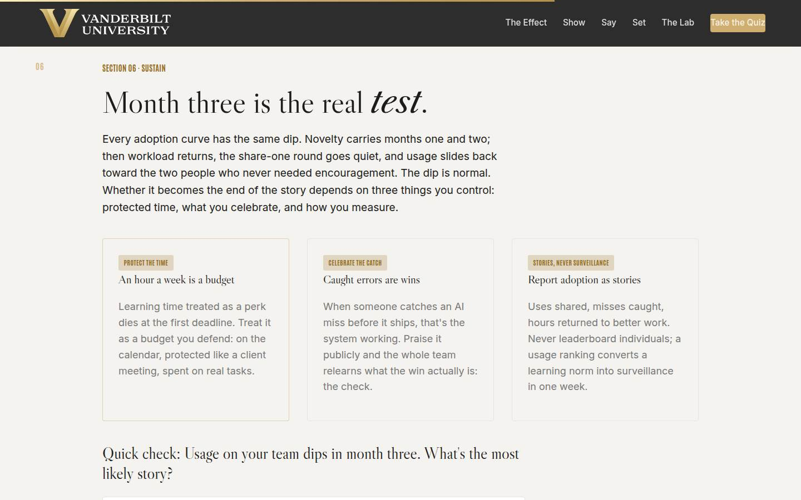
06 · Sustain past the cliff Full 10 min · Core 6
Normalize the month-three dip and install the three sustaining structures: protected learning time as a defended budget, celebrated catches, and story-based reporting that never becomes a leaderboard.
Say
“Month three is where team AI adoption actually gets decided. The novelty carries the first two months for free. Then the busy season hits, the share-one round goes quiet, and usage slides back toward the two people who never needed you. The dip is normal; it's on every curve. What matters is what you've built to catch it. Three structures. Protected learning time: an hour a week, and it's a budget you defend like a client meeting, because a perk dies at the first deadline. Celebrated catches: when someone stops an AI error before it ships, that's the system working, so praise it publicly and the team relearns what the win is. And reporting that tells stories: uses shared, misses caught, hours returned to better work, always at the team level. Never rank individuals on usage. A leaderboard converts your learning norm into surveillance in one week, and the safety you spent three months building goes with it.”
Do
- Land the dip first: novelty carries two months, then workload returns and usage slides. It's on every adoption curve, and panicking at it does the damage.
- Walk the three cards: the hour as a budget, the catch as the win, stories instead of surveillance.
- Say the leaderboard line plainly: rank individuals on AI usage once, and the psychological safety you built dies in a week.
- Run the quick check on the dip, then send them to Month-three moves: four dip scenarios, pick the sustaining move.
- Run the group drill: which sustaining structure dies first on YOUR team, in which week, and what's the move that week?
Ask
“Which of the three structures dies first on your team, in which week, and what's your move that week?”
Expect:
- The learning hour, at whatever their busy season is
- The share-one round, quietly, when the meeting runs long
- An honest 'all three; we've never sustained any initiative past a quarter'
Respond: For the 'we never sustain anything' confession: 'Then make the week-ten calendar note the only thing you take from this section. One reminder, one seeded round, one defended hour. Sustaining is a maintenance task, and maintenance tasks survive on calendars, never on enthusiasm.'
Debrief: The dip arrives on schedule; so can you. A week-ten note, a defended hour, a celebrated catch, and a story-shaped report is the whole sustain playbook.
Validate: Quick check correct; 3+ of 4 on the trainer; every learner has named their team's first-to-die structure and the week they'll intervene.
Watch for: Managers whose sustain plan is 'stay excited.' Push to structure: excitement is exactly the resource that runs out in month three, which is why the calendar note, the defended hour, and the seeded round exist. Also anyone still attached to the usage dashboard; replay the trainer's leaderboard scenario and let the safety logic land.
Transition: “That's the full method. Quiz first, then the plan that puts a date on it.”
Core path: Core: dip framing in one line, cards fast, quick check and trainer on devices; the group drill becomes the solo one-line week-ten note.
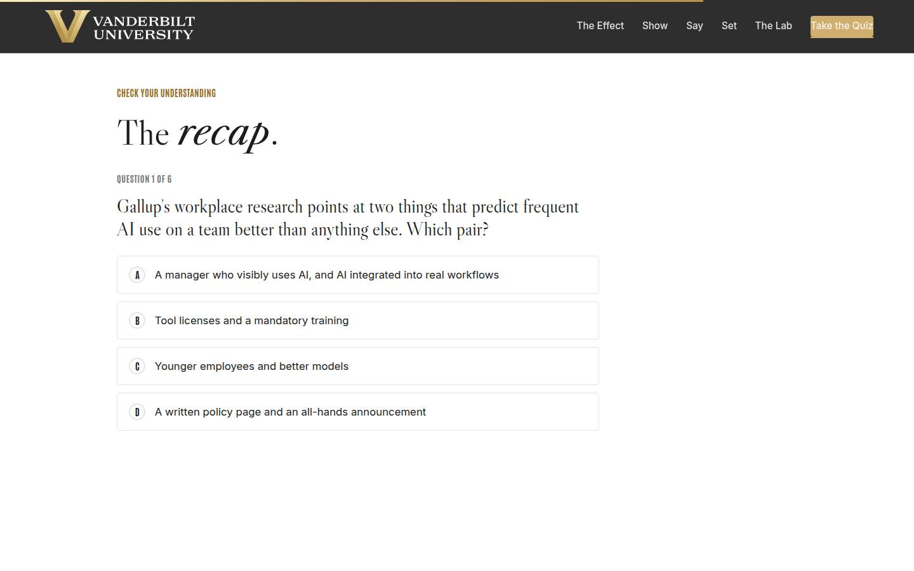
Recap quiz Full 4 min · Core 4
Score the session's knowledge against the five objectives before the capstone applies it (Kirkpatrick Level 2).
Say
“Six questions, one per big idea. This is the systems check before you write the plan that leaves the room with you.”
Do
- Everyone takes it on their own device, all six questions.
- Ask for hands on 5-or-better; celebrate briefly.
- For any question the room visibly missed, do a 30-second reteach from the relevant slide, not a lecture.
Validate: Room mode at 5/6 or better. The quiz maps onto the objectives, so misses tell you exactly what to reteach.
Watch for: Racing. Frame it as the systems check before the plan, not a race.
Transition: “Now the only part of today that changes anything.”
Core path: Core: keep at full length; this is the objectives' evidence.
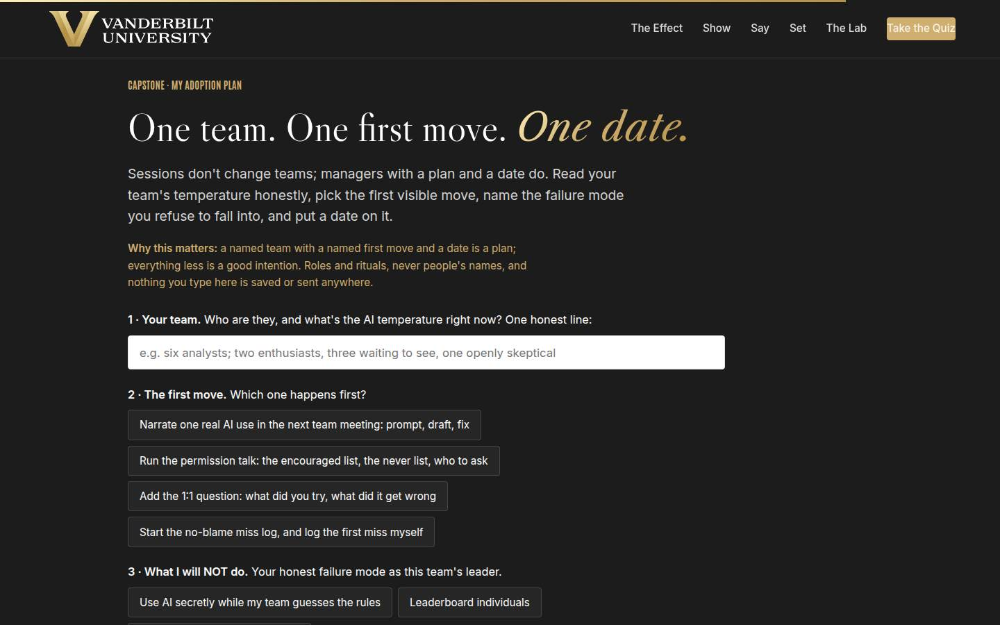
Capstone · My adoption plan Full 6 min · Core 6
Convert the session into one dated commitment: one team read honestly, one first visible move, one named failure mode to refuse, and a date. The transfer artifact and the Level 3 seed.
Say
“Sessions don't change teams. Managers with a plan and a date do. First, read your team honestly: who's keen, who's waiting, who's skeptical; that line decides everything else. Then the first move, and notice every option is something your team can SEE: narrate one real use, run the permission talk, add the 1:1 question, or start the miss log with your own miss in it first. Then the honest field: what you will NOT do, because you know your failure mode; using AI secretly while the team guesses, ranking individuals, or letting month three drift by unmeasured. And the date. A named team with a named first move and a date is a plan. Everything less is a good intention.”
Do
- Frame it: sessions don't change teams; managers with a plan and a date do.
- Repeat the privacy norm before anyone types: roles and rituals, nothing saved or sent.
- Give quiet time; this is individual work. Circulate for stuck learners: the narration is the cheapest first move, and the 1:1 question needs no personal AI fluency at all.
- Point at field 3, what you will NOT do, as the honest one: every manager in the room has one of these three failure modes, and most have the first.
- Push the build moment, then the close-the-loop line: at day 30, one line of evidence, who tried something new, what did the team catch, where did the hours go.
Ask
“What's most likely to stop your first move from happening, and what's your plan for that obstacle?”
Expect:
- Nerves about narrating a miss in front of the team
- No team meeting scheduled soon enough
- Doubt that their own AI use is impressive enough to show
Respond: Nerves: 'Rehearse it once out loud tonight; ninety seconds, and the miss is the credibility.' No meeting: 'The 1:1 question needs no meeting; it starts in your next 1:1, which is probably tomorrow.' Not impressive enough: 'Unimpressive is the point. A modest, checked, real use is copyable; a spectacular one is a performance.'
Debrief: One team is about to watch its manager use AI out loud, hear the rules stated plainly, and find a safe place to try. That's how adoption actually starts: one visible move at a time.
Validate: Every learner builds a plan (all four fields). The plan plus the 7-day pulse plus the 30-day re-poll is the evidence chain.
Watch for: Grand plans ('transform my team's AI culture'). Push to ONE move inside ONE meeting that already exists. And date-dodging: a first move 'soon' is not a commitment; help them pick the actual meeting on the spot.
Transition: “Reference shelf in one breath, and then the send-off.”
Core path: Core: protect at full length; never cut the capstone.
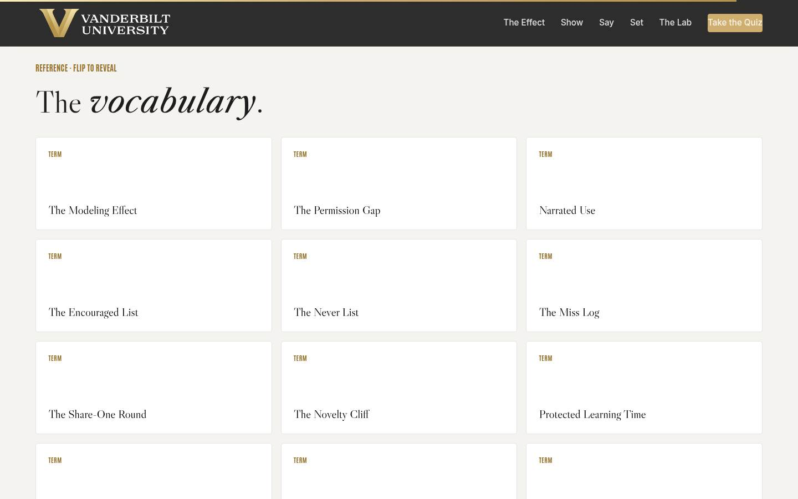
Glossary Full 1 min · Core skip
Signpost the reference layer; it lives here for after the session.
Say
“Every term from today lives here as flip cards, including the permission gap, for the next time someone tells you their team 'just knows' the rules.”
Do
- Flip one card on the projector (The Permission Gap is a good pick; it reteaches the session's core number).
- Tell them it's all here whenever they need the vocabulary back.
Validate: None; reference material.
Watch for: Don't tour all twelve cards; one flip makes the point.
Transition: “Last slide. One first move left.”
Core path: Core: skip; point at it verbally from the closing slide.
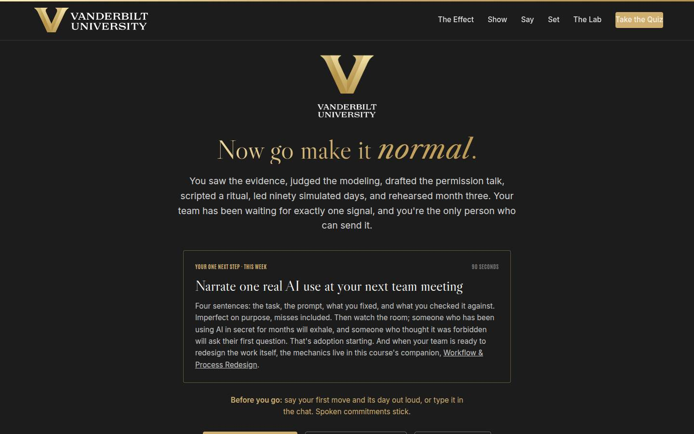
Closing · commitment Full 4 min · Core 1
Convert plans into spoken commitments, capture the Level 1 reaction check, and point at the follow-up chain.
Say
“The whole session in one breath: the data says your team adopts what it sees you do. So show your use, misses included. Say the rules out loud, twice. Set the norms into meetings you already run. And sustain it past month three with a defended hour, a celebrated catch, and a story instead of a scoreboard. You have a plan. Before you go: your first move, and its day. Say it out loud; spoken commitments stick.”
Do
- Read the featured card: the one next step is narrating one real AI use at the next team meeting, four sentences, misses included.
- Run the fist-to-five (Level 1): 'On a fist to five, how confident are you that you can make AI use normal on your team?' Scan and note the number; the 30-day re-poll asks it again.
- Run the commitment round, popcorn style: first move and its day, out loud or in chat.
- Point at the cheat sheet and adoption plan buttons; the cheat sheet is built to sit next to their 1:1 notes.
- Tell them the 7-day pulse is coming, then land the last line and stop on time.
Ask
“Around the room, one line each: your first move, and its day.”
Expect:
- 'Narrating my board-update draft, Thursday's team meeting'
- 'The permission talk, Monday'
- 'The 1:1 question, starting tomorrow morning'
Respond: Thank each one, no commentary. If someone commits to finding out what their team already uses first, warmly: 'Good instinct. Ask what they'd hate to give back; that question surfaces the secret uses without making anyone confess.'
Debrief: The session's success metric isn't in this room; it's the 7-day pulse: how many first moves actually happened, and what the teams did in the moment.
Validate: Fist-to-five mostly 3+ (Level 1); a majority state a first move and a day out loud or in chat. Count both; with the pulse and the 30-day re-poll, that's your evidence chain.
Watch for: Plans that quietly skipped the date. The commitment round catches them: no day, no commitment; help them pick one on the spot.
Transition: “Go make the first move. And when someone on your team exhales because it turns out they were allowed all along, that exhale is the sound of adoption starting.”
Core path: Core: fist-to-five plus a fast commitment round; the ending survives every cut.
Generated from facilitator/notes.json. The on-screen facilitator edition lives at ./ alongside this guide.